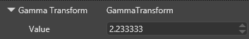

ガンマ補正
初級 アーティスト プログラマー
ポストエフェクトの計算は、すべて線形空間（すなわち RGB 空間）で行われます。つまり、ピクセルの色の値を 2 倍にすると、そのピクセルが発する光も 2 倍になります。これにより、正しい照明計算が保証されます。
しかし、現実のコンピューターモニターではこのようにはいかず、暗い色の値に対しては、本来よりもはるかに少ない光しか発しない傾向があります。このため、他のポストエフェクトを適用したあとには、画像を線形空間から sRGB 空間（またはガンマ空間）に変換するために ガンマ補正gamma correction を行います。
sRGB 空間のバッファは、モニターやテレビ画面に正しく表示されます。

ガンマ補正をされていない画像は、暗い部分が、本来の色よりも暗く見えます。

プロパティ
| プロパティ | 説明 |
|---|---|
| Value | ガンマ値。一般的には 2.2 付近です。 |